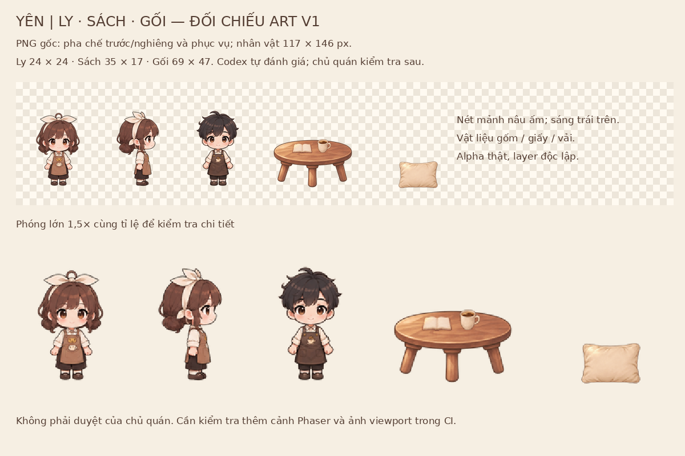

Ly, sách và gối — đối chiếu v1
Codex đã đối chiếu với PNG pha chế và phục vụ theo uỷ quyền; chủ quán kiểm tra sau.
Nhân vật 117 × 146 px. Ly 24 × 24, sách 35 × 17, gối 69 × 47. Các chi tiết có layer và trạng thái riêng trong game.

Ly được dọn ở bàn; gối được chỉnh tại ghế. Sang ngày mới, đồ vật trở về trạng thái ban đầu. Chưa có artwork ngồi hoặc lật trang sách mới.
Vào game kiểm tra · Đối chiếu bàn